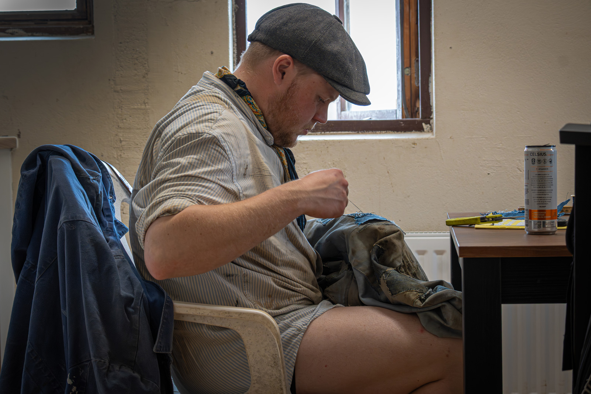
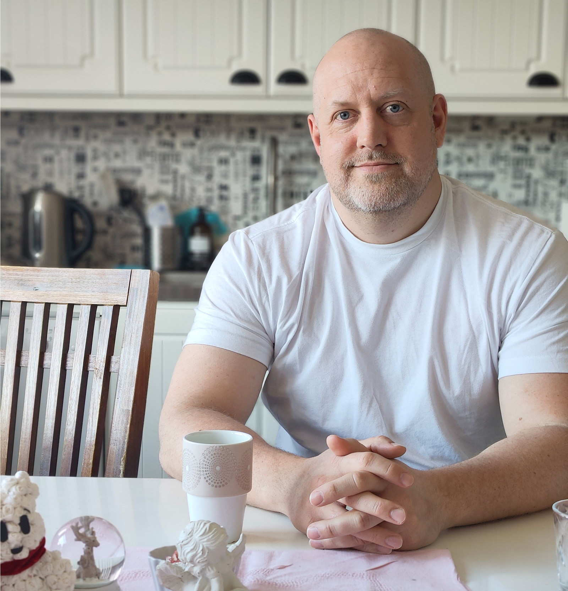

Recent Projects

Photo Reportage
A documentary photo reportage of a day in a farmhands life
Video reportage
A video reportage of Bamses small house in Stockholm

Feature Profile
A feature profile about Emil Wickman, the action figure craftsman

Reportage
A reportage taking you through an event of Magic: The Gathering